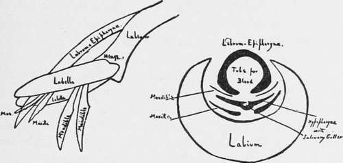

Anatomy Of The Mosquito
Description
This section is from the book "Malaria, Influenza And Dengue", by Julius Mennaberg and O. Leichtenstern. Also available from Amazon: Malaria, influenza and dengue.
Anatomy Of The Mosquito
The true proboscis in the Anophelince is concealed by the maxillary palpi, which lie slightly dorsal to it. The maxillary palpi in the female consist of five segments. The first or basal segment is extremely minute, and is disregarded by some authors, who consider the female palpi to have four segments and the male three. This is of some importance in systematic classification, for the real second segment would be called the first, and so on. The second segment is long, but not so long as the third segment, which is the longest of all. The fourth segment is shorter than the second, and the fifth or terminal segment is little more than twice as long as broad. These segments are often incorrectly termed joints. This term, however, should be reserved for the point of junction of two adjacent segments, and it is at these joints or at the tip of the last segment that the "bands" are formed which, as we shall see, are of great assistance in separating closely allied species. The palpi are scaled, but the amount of this varies greatly in the different genera of the Anophelince, Anopheles, for instance, having few, while Cellia has very many. The shape of the palpi in the male differs from that of the female in that the ends are broad and club shaped, and their appearance is so characteristic and so prominent in the living Anophelince that the male can be distinguished in dark dwelling houses more readily by this sign than by its plumose antennae. In the case of the male palpi, while some authors describe five segments, the two last of which are expanded, others only describe three, i. e., one besides the two terminal segments, the constrictions of the basal segment being ignored. During the act of sucking blood the palpi project upward, away from the proboscis, at about a right angle. The proboscis itself consists of seven parts. The labium forming the sheath of the proboscis is grooved on its dorsal surface, and it is in this groove that the rest of the structures-the stilets or those portions that really traverse the skin-lie. It is slightly longer than the true proboscis, and has two short segments, attached distally, known as the labellae; these are movable on a hinge joint. The labium itself is continued dor sally still a little further than the level of these joints as a fine tongue, just as a pen is prolonged beyond the end of its holder. Further, Dutton describes a fine membrane covering in the area between this extended tongue and the base of the labellae. This median portion of the terminal segments of the labium bears hairs and is tightly pressed against the skin during the act of sucking, while the labellae are expanded and support the proboscis laterally. The labium and its labellae do not pierce the skin, but the stilets pass through and receive guidance from the expanded labellae, as the fingers of a billiard player guide the cue. During the act of suction, as the stilets pierce, the labium bends with its convexity ventralward, as a cane walking stick bends when pushed against the ground, and the angle of flexion may be distinctly acute, depending on the depth to which the stilets are inserted. The labium is, as we have said, comparatively large and fleshy, and is traversed by nerves, tracheae, and muscle fibers. It is in this fleshy portion that Filarial may be encountered, and much discussion has arisen as to how they find an exit. It was originally supposed that the labium was ruptured during its flexion, and that the filarial embryos made their exit thereby, but there is no evidence of any such rupture, and if, as has been generally assumed, the filarial embryos are in the labium, with the object of reaching the blood during suction, they would not attain this end by escaping at this point. The filarial embryos, moreover, have their heads abutting on the end of the labium,-in fact, in the region of the thin membrane described above,-and it is here, according to Dutton, that they escape. As the proboscis is retracted the labium straightens out again, and, in fact, by its resiliency, as Schaudinn suggests, probably aids in bringing about this process. Turning now to the parts that actually pierce the skin, i. e., the stilets, we have six structures-two tubular structures, the epipharynx and hypo pharynx, two pairs of chitinous rods, the maxillae, and the mandibles.
Fig. 5.-The Proboscis showing Labium and Stilets on the Right, the Proboscis in Cross section; the Palpi are not Shown (from Stephens and Christophers' "Practical Study of Malaria").
The upper lip, or labrum epipharynx, consists of two parts intimately fused together, of which the labrum is the most dorsal. It arises at the base of the clypeus, while the epipharynx is a hollow tube not completely closed on its ventral side, continuous through the base of the clypeus with the pharynx. In its passage through the anterior portion of the clypeus the borders of the epipharynx are reflected upward and outward so as to become continuous with the lateral walls of the clypeus. It is the longest of these structures, and its extremity, slightly clecurved, resembles somewhat the point of a hypodermic needle. At its base the epipharynx is continuous with the buccal cavity, and it is through this tube that blood passes up during the act of suction. Closely applied to the ventral opening of the labrum is the hypopharynx. The hypopharynx is flat or crescentic in shape, the middle of the crescent being thickened, and in this part there is a groove or gutter which, by others, is figured as a complete perforation. It is in this groove that the continuation of the salivary duct runs and along which malarial sporozoites pass out. Basally, the hypopharynx has attached to it two powerful muscles which probably serve to retract it after insertion. In the male mosquito the hypopharynx is blended with the labium, forming its dorsal surface; it is also traversed by a salivary duct, but in the male, except rarely, the proboscis does not pierce. The epipharynx and hypopharynx are closely applied to each other and mutually close the incomplete passages in both. The remaining organs are the paired mandibles and maxilla?. Their position is dorsolateral. No doubt the exact position and size of the parts will vary in different genera, and, in fact, differences occur in the genera Culex and Anopheles. The most dorsal are the mandibles; they lie, one on either side, external to the labrum. They are more delicate than the maxillae. In cross section they are crescentic, and at their extremity they are provided with about 30 teeth (Anopheles maculipennis). There are no mandibles in the male. The maxillae lie dorsoventrally and partly embrace the edges of the hypopharynx. In cross section they are approximately wedge shaped, with the thick edge of the wedge ventral and inward; the extremity of the maxillae is also toothed, but the teeth are coarser than those of the mandibles and are fewer in number (13 in Anopheles maculipennis). From the base of the maxillae with which they are articulated arise the maxillary palpi described above. The apodemes with which the palpi are articulated are described under Muscular System. In Culex pipiens the structure of the parts, as described by Schaudinn, is slightly different.
Continue to:
Tags
mosquito, malaria, influenza, dengue, symptoms, outbreaks, diseases, hemoglobinuria, infections